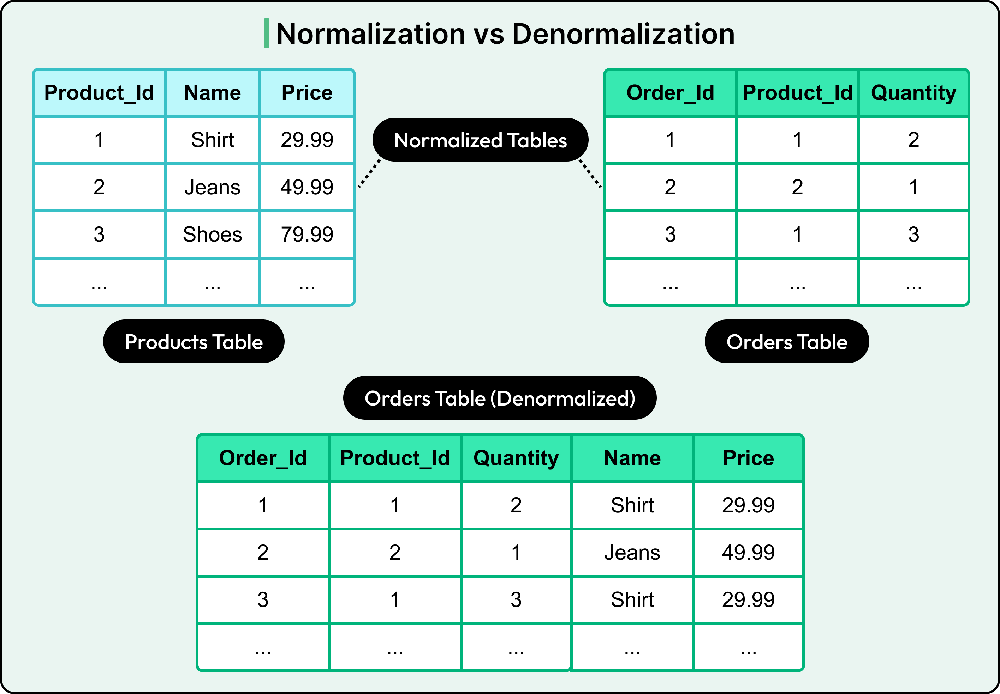
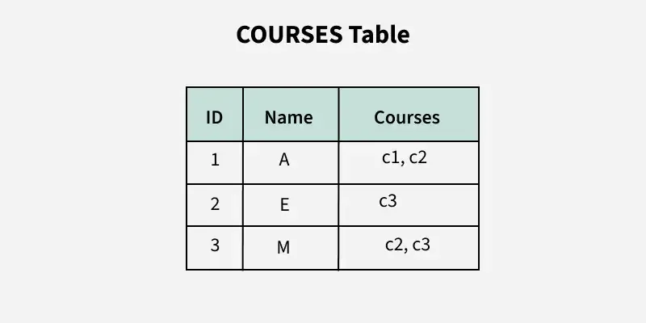
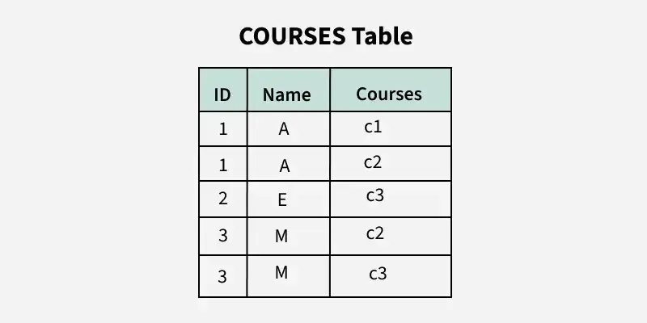
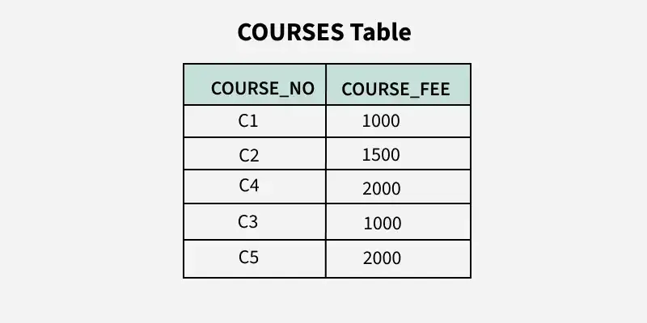
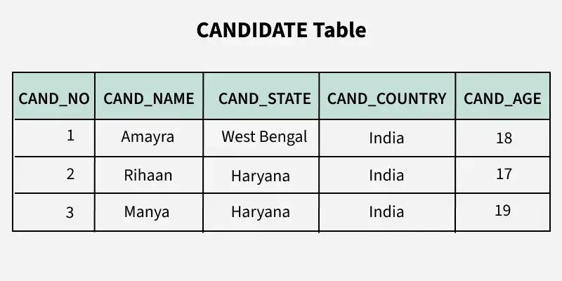
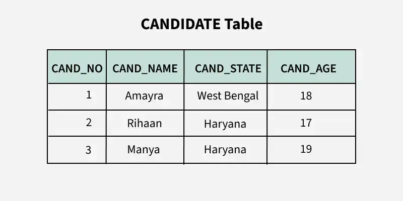

System Design Mastery
Master scalable systems with premium insights
🗄️ Normalization vs Denormalization — Consistency vs Performance Trade-off
1️⃣ What is it?
🔹 Normalization
Organizing data into multiple related tables to reduce redundancy and improve consistency.

Example (Before Normalization ❌)
Single table:
Orders
----------------------------------
order_id | user_name | user_city | product
1 | Anna | Hyderabad | Phone
2 | Anna | Hyderabad | Laptop
Problem:
- Repeated user data
- Redundancy
- Hard to update
After Normalization ✅
Split into tables:
Users
-----------------------
user_id | name | city
Orders
-----------------------
order_id | user_id | product
🔹 Denormalization
Combining data into fewer tables by duplicating data to improve read performance.
Orders
----------------------------------
order_id | user_name | city | product
1 | Anna | Hyderabad | Phone
2 | Anna | Hyderabad | Laptop
Data is duplicated intentionally.
2️⃣ Why do they exist? (What problem do they solve?)
Normalization solves:
- Data duplication
- Data inconsistency
- Easier updates
Denormalization solves:
- Slow queries
- Too many joins
- High read latency
3️⃣ What breaks without them?
Without Normalization:
- Duplicate data
- Inconsistent updates
- Data anomalies
Example:
Same user email stored 10 times → update needed everywhere ❌
Without Denormalization:
- Complex joins
- Slow queries
- High latency
Example:
Fetching user + orders requires multiple joins → slow ❌
5️⃣ When to use / When NOT to use
✅ Use Normalization:
- OLTP systems (transactions)
- Banking systems
- Payment systems
- Data integrity is critical
❌ Avoid Normalization when:
- Too many joins required
- Performance is slow
✅ Use Denormalization:
- Read-heavy systems
- Analytics systems
- Caching layers
- Data warehouses
❌ Avoid Denormalization when:
- Frequent updates
- Data consistency is critical
6️⃣ One common mistake
🚨 Thinking one is always better
👉 Real systems use both:
- Normalize for correctness
- Denormalize for performance
7️⃣ Real app connection
🛒 E-commerce
Users & Orders → Normalized
Product listing page → Denormalized (fast reads)
📊 Analytics System
Denormalized tables for fast reporting
🧠 Real-World Examples
🏦 Banking System → Normalization
- Needs high consistency
- Avoid duplicate data
Example:
Account details stored once
Transactions linked via IDs
📱 Instagram / Netflix → Denormalization
- Need fast reads
- Millions of users
Example:
Feed data precomputed
User data duplicated for speed
8️⃣ Key differences
⚡ Important Insight
👉 Normalization = Consistency first
👉 Denormalization = Performance first
🔹 What are Normal Forms?
Normal Forms are rules used to organize database tables to reduce redundancy and improve consistency.
1️⃣ First Normal Form (1NF)
Rule
Each column must have atomic (single) values and no repeating groups.


Key Idea
👉 No multiple values in a single column
🧠 2️⃣ Second Normal Form (2NF)
Rule
Table must be in
1NF + no partial dependency
(Every non-key column must depend on the full primary key)
What is Partial Dependency?
Partial dependency occurs when a one column depends on only part of a composite primary key, instead of the whole key.
A composite key means:
👉 Primary key =
combination of multiple columns
Example: (order_id, product_id)
The candidate key for this table is {STUD_NO, COURSE_NO} because the combination of these two columns uniquely identifies each row in the table.
COURSE_FEE is a non-prime attribute because it is
not part of the candidate key {STUD_NO, COURSE_NO}.
But, COURSE_NO -> COURSE_FEE, i.e., COURSE_FEE is dependent on
COURSE_NO, which is a proper subset of the candidate key.
Therefore, Non-prime attribute COURSE_FEE is dependent on a proper subset of the candidate key, which is a partial dependency and so this relation is not in 2NF.

Key Idea
👉 No partial dependency on composite key
🧠 3️⃣ Third Normal Form (3NF)
Rule
Table must be in 2NF + no transitive dependency
What is Transitive dependency?
A transitive dependency occurs when one non-prime attribute depends on another non-prime attribute rather than depending directly on the primary key.
For example, if we have the following relationship between attributes:
A -> B (A determines B)
B -> C (B determines C)
This means that A indirectly determines C through B, creating a transitive dependency.
3NF eliminates these transitive dependencies to ensure that non-key
attributes are directly dependent only on the primary key.

3. Identifying Transitive Dependency:
The candidate key for this relation is {CAND_NO}, since CAND_NO uniquely identifies all other attributes in the table.
The issue here arises from the transitive dependency between CAND_NO
and CAND_COUNTRY:
CAND_NO → CAND_STATE
CAND_STATE → CAND_COUNTRY
This means that CAND_COUNTRY is transitively dependent on CAND_NO via CAND_STATE, which violates the Third Normal Form (3NF) rule that states that no non-prime attribute (non-key attribute) should be transitively dependent on the primary key.
Final Decomposed Relations:
CANDIDATE (CAND_NO, CAND_NAME, CAND_STATE, CAND_AGE)
STATE_COUNTRY (CAND_STATE, CAND_COUNTRY)

Key Idea
👉 Non-key columns should depend only on primary key
🎯 Interview-ready one-liner
Normalization reduces data redundancy and ensures consistency, while denormalization improves read performance by duplicating data and reducing joins.
🧠 Summary
- Normalization organizes data into multiple tables to reduce redundancy and maintain consistency
- Denormalization combines data into fewer tables to improve read performance and reduce joins
- Modern systems use a balance of both based on performance and consistency needs